2024 Higher Mathematics - Paper 1 marking instructions
Source: Scottish Qualifications Authority (SQA) / Qualifications Scotland. This is a StemInteract HTML companion, not an official HTML edition. Selectable text is supplied alongside original page images. Use the images or original PDF for equations, powers, fractions, vector notation, tables and diagrams; text extraction cannot fully preserve mathematical layout.
Jump to a question
PDF page 1
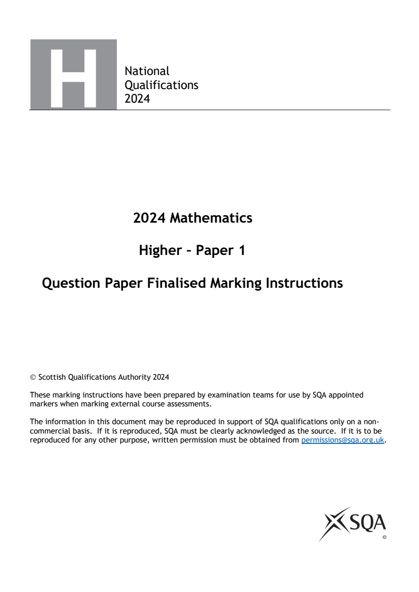
Selectable page text
National
Qualifications
2024
2024 Mathematics
Higher – Paper 1
Question Paper Finalised Marking Instructions
© Scottish Qualifications Authority 2024
These marking instructions have been prepared by examination teams for use by SQA appointed
markers when marking external course assessments.
The information in this document may be reproduced in support of SQA qualifications only on a non-
commercial basis. If it is reproduced, SQA must be clearly acknowledged as the source. If it is to be
reproduced for any other purpose, written permission must be obtained from permissions@sqa.org.uk.PDF page 2
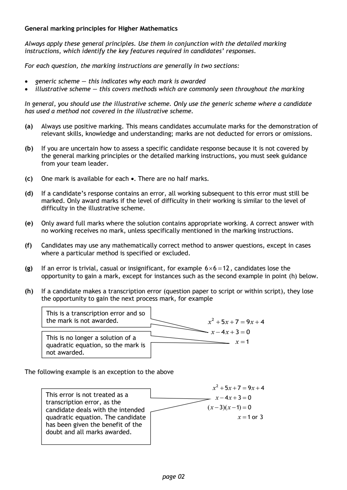
Selectable page text
General marking principles for Higher Mathematics
Always apply these general principles. Use them in conjunction with the detailed marking
instructions, which identify the key features required in candidates’ responses.
For each question, the marking instructions are generally in two sections:
• generic scheme — this indicates why each mark is awarded
• illustrative scheme — this covers methods which are commonly seen throughout the marking
In general, you should use the illustrative scheme. Only use the generic scheme where a candidate
has used a method not covered in the illustrative scheme.
(a) Always use positive marking. This means candidates accumulate marks for the demonstration of
relevant skills, knowledge and understanding; marks are not deducted for errors or omissions.
(b) If you are uncertain how to assess a specific candidate response because it is not covered by
the general marking principles or the detailed marking instructions, you must seek guidance
from your team leader.
(c) One mark is available for each •. There are no half marks.
(d) If a candidate’s response contains an error, all working subsequent to this error must still be
marked. Only award marks if the level of difficulty in their working is similar to the level of
difficulty in the illustrative scheme.
(e) Only award full marks where the solution contains appropriate working. A correct answer with
no working receives no mark, unless specifically mentioned in the marking instructions.
(f) Candidates may use any mathematically correct method to answer questions, except in cases
where a particular method is specified or excluded.
(g) If an error is trivial, casual or insignificant, for example 6×6=12, candidates lose the
opportunity to gain a mark, except for instances such as the second example in point (h) below.
(h) If a candidate makes a transcription error (question paper to script or within script), they lose
the opportunity to gain the next process mark, for example
This is a transcription error and so
the mark is not awarded. x² +5x+7 =9x+4
x−4x+3=0
This is no longer a solution of a
x =1
quadratic equation, so the mark is
not awarded.
The following example is an exception to the above
x² +5x+7=9x+4
This error is not treated as a
x−4x+3=0
transcription error, as the
(x−3)(x−1)=0
candidate deals with the intended
quadratic equation. The candidate x=1 or 3
has been given the benefit of the
doubt and all marks awarded.
page 02PDF page 3
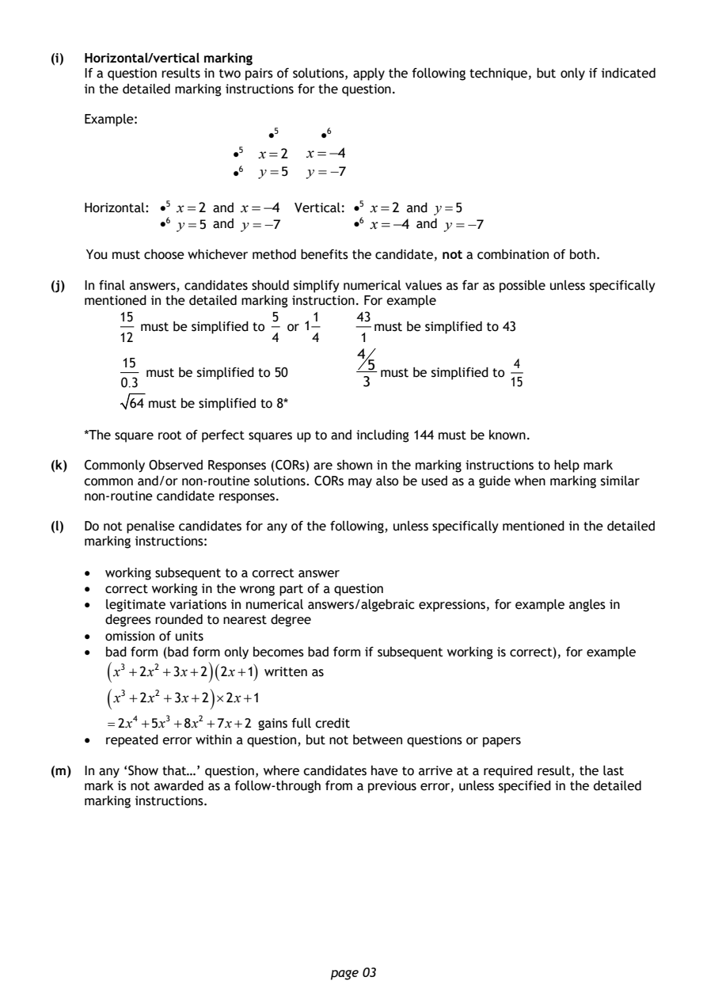
Selectable page text
(i) Horizontal/vertical marking
If a question results in two pairs of solutions, apply the following technique, but only if indicated
in the detailed marking instructions for the question.
Example:
•5 •6
•5 x=2 x=−4
•6 y =5 y =−7
Horizontal: •5 x=2 and x=−4 Vertical: •⁵ x=2 and y=5
•6 y =5 and y =−7 •6 x=−4 and y =−7
You must choose whichever method benefits the candidate, not a combination of both.
(j) In final answers, candidates should simplify numerical values as far as possible unless specifically
mentioned in the detailed marking instruction. For example
15 5 1 43
must be simplified to or 1 must be simplified to 43
12 4 4 1
4
15 5 4
must be simplified to 50 must be simplified to
0.3 3 15
64 must be simplified to 8*
*The square root of perfect squares up to and including 144 must be known.
(k) Commonly Observed Responses (CORs) are shown in the marking instructions to help mark
common and/or non-routine solutions. CORs may also be used as a guide when marking similar
non-routine candidate responses.
(l) Do not penalise candidates for any of the following, unless specifically mentioned in the detailed
marking instructions:
• working subsequent to a correct answer
• correct working in the wrong part of a question
• legitimate variations in numerical answers/algebraic expressions, for example angles in
degrees rounded to nearest degree
• omission of units
• bad form (bad form only becomes bad form if subsequent working is correct), for example
(
x³ +2x² +3x+2
)(2x+1)
written as
( )
x³ +2x² +3x+2 ×2x+1
=2x⁴ +5x³ +8x² +7x+2 gains full credit
• repeated error within a question, but not between questions or papers
(m) In any ‘Show that…’ question, where candidates have to arrive at a required result, the last
mark is not awarded as a follow-through from a previous error, unless specified in the detailed
marking instructions.
page 03PDF page 4
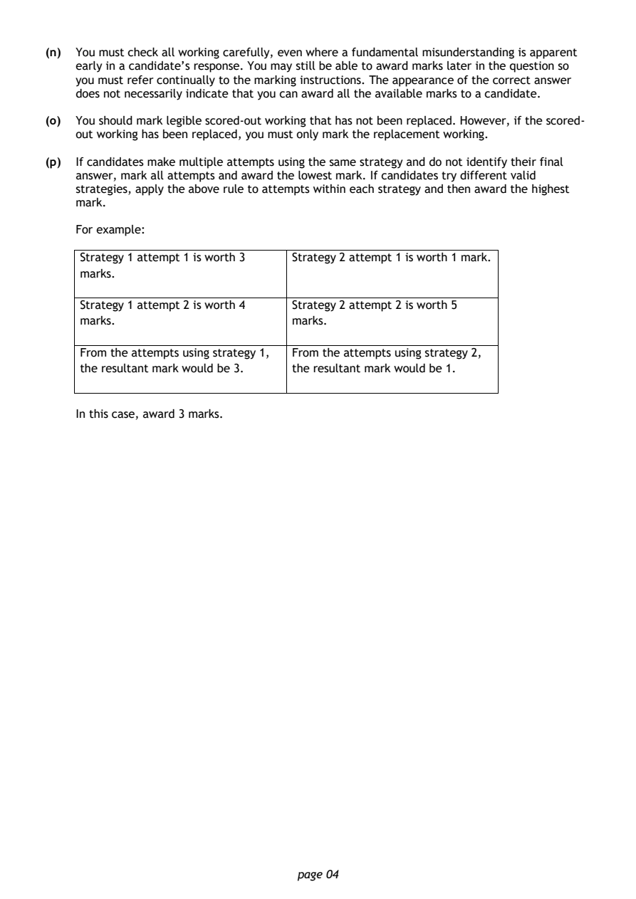
Selectable page text
(n) You must check all working carefully, even where a fundamental misunderstanding is apparent
early in a candidate’s response. You may still be able to award marks later in the question so
you must refer continually to the marking instructions. The appearance of the correct answer
does not necessarily indicate that you can award all the available marks to a candidate.
(o) You should mark legible scored-out working that has not been replaced. However, if the scored-
out working has been replaced, you must only mark the replacement working.
(p) If candidates make multiple attempts using the same strategy and do not identify their final
answer, mark all attempts and award the lowest mark. If candidates try different valid
strategies, apply the above rule to attempts within each strategy and then award the highest
mark.
For example:
Strategy 1 attempt 1 is worth 3 Strategy 2 attempt 1 is worth 1 mark.
marks.
Strategy 1 attempt 2 is worth 4 Strategy 2 attempt 2 is worth 5
marks. marks.
From the attempts using strategy 1, From the attempts using strategy 2,
the resultant mark would be 3. the resultant mark would be 1.
In this case, award 3 marks.
page 04PDF page 5
Paper 1, Question 1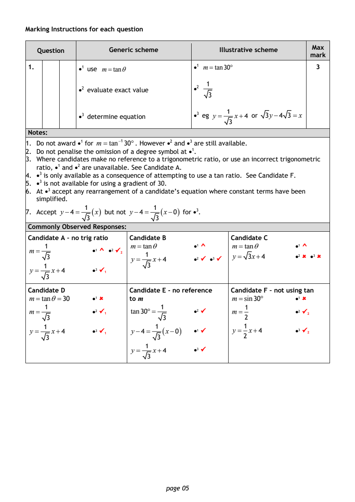
Selectable page text
Marking Instructions for each question
Max
Question Generic scheme Illustrative scheme
mark
1. •1 use m=tanθ •1 m=tan30° 3
1
•2 evaluate exact value •2
3
1
•3 determine equation •3 eg y = x+4 or 3y−4 3 = x
3
Notes:
1. Do not award •¹ for m=tan⁻¹30°. However •² and •³ are still available.
2. Do not penalise the omission of a degree symbol at •¹.
3. Where candidates make no reference to a trigonometric ratio, or use an incorrect trigonometric
ratio, •¹ and •² are unavailable. See Candidate A.
4. •³ is only available as a consequence of attempting to use a tan ratio. See Candidate F.
5. •³ is not available for using a gradient of 30.
6. At •³ accept any rearrangement of a candidate’s equation where constant terms have been
simplified.
1 1
7. Accept y−4= (x) but not y−4= (x−0) for •³.
3 3
Commonly Observed Responses:
Candidate A – no trig ratio Candidate B Candidate C
1 m=tanθ •1 ^ m=tanθ •1 ^
m= •1 ^ •2 ✓
3 2
y =
1
x+4 •2 ✓ •3 ✓
y= 3x+4 •2 •3
1 3
y = x+4 •3 ✓
1
3
Candidate D Candidate E - no reference Candidate F – not using tan
m=tanθ=30 •1 to m m=sin30° •1
1 1 1
m= •2 ✓ tan30°= •2 ✓ m= •2 ✓
1 2
3 3 2
1 1 1
y =
3
x+4 •3 ✓
1
y−4=
3
(x−0) •1 ✓ y =
2
x+4 •3 ✓
2
1
y = x+4 •3 ✓
3
page 05PDF page 6
Paper 1, Question 2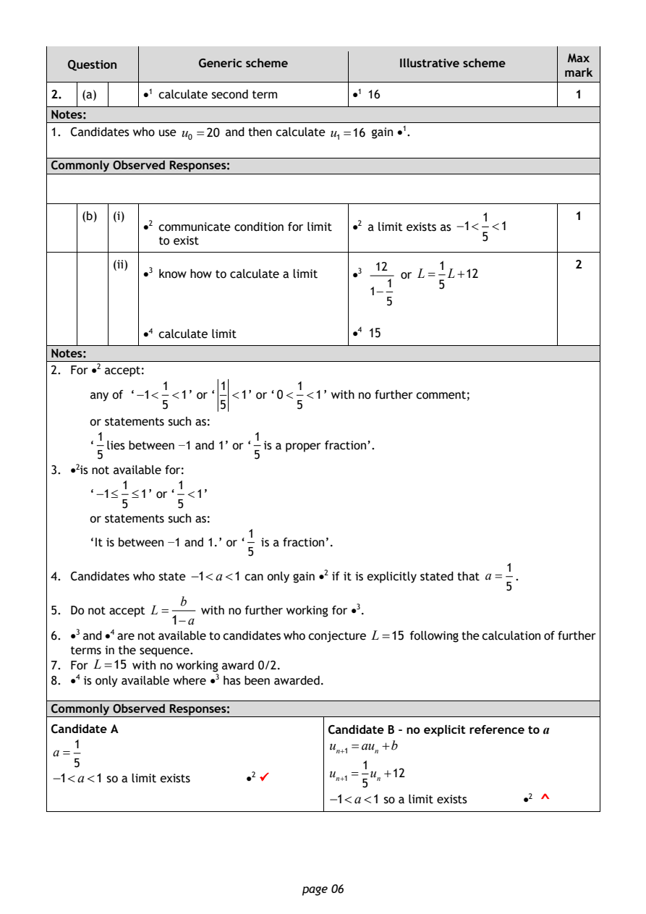
Selectable page text
Max
Question Generic scheme Illustrative scheme
mark
2. (a) •1 calculate second term •1 16 1
Notes:
1. Candidates who use u₀ =20 and then calculate u₁=16 gain •¹.
Commonly Observed Responses:
(b) (i) 1 1
•2 communicate condition for limit •2 a limit exists as −1< <1
5
to exist
(ii) 12 1 2
•3 know how to calculate a limit •3 or L= L+12
1−
1 5
5
•4 calculate limit •4 15
Notes:
2. For •² accept:
1 1 1
any of ‘−1< <1’ or ‘ <1’ or ‘0< <1’ with no further comment;
5 5 5
or statements such as:
1 1
‘ lies between −1 and 1’ or ‘ is a proper fraction’.
5 5
3. •²is not available for:
1 1
‘−1≤ ≤1’ or ‘ <1’
5 5
or statements such as:
1
‘It is between −1 and 1.’ or ‘ is a fraction’.
5
1
4. Candidates who state −1<a<1 can only gain •² if it is explicitly stated that a = .
5
b
5. Do not accept L= with no further working for •³.
1−a
6. •³ and •⁴ are not available to candidates who conjecture L=15 following the calculation of further
terms in the sequence.
7. For L=15 with no working award 0/2.
8. •⁴ is only available where •³ has been awarded.
Commonly Observed Responses:
Candidate A Candidate B – no explicit reference to a
1 uₙ₊₁=auₙ +b
a =
5 1
−1<a<1 so a limit exists •2 ✓
uₙ₊₁ = uₙ +12
5
−1<a<1 so a limit exists •2 ^
page 06PDF page 7
Paper 1, Question 3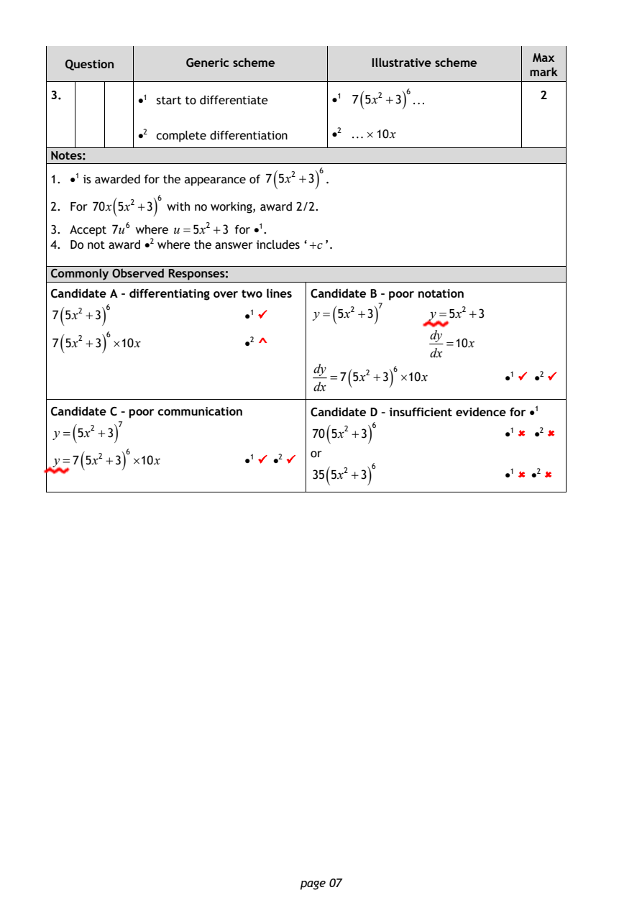
Selectable page text
Max
Question Generic scheme Illustrative scheme
mark
3. •1 start to differentiate •1 7 ( 5x² +3 ) ⁶ 2
•2 complete differentiation •2 ×10x
Notes:
( )
1. •¹ is awarded for the appearance of 7 5x² +3 ⁶.
( )
2. For 70x 5x² +3 ⁶ with no working, award 2/2.
3. Accept 7u⁶ where u =5x² +3 for •¹.
4. Do not award •² where the answer includes ‘+c’.
Commonly Observed Responses:
Candidate A – differentiating over two lines Candidate B – poor notation
7 ( 5x² +3 ) ⁶ •1 ✓ y= ( 5x² +3 ) ⁷ y=5x² +3
dy
( )
7 5x² +3 ⁶×10x •2 ^ =10x
dx
dy
( )
=7 5x² +3 ⁶×10x •1 ✓ •2 ✓
dx
Candidate C – poor communication Candidate D – insufficient evidence for •¹
( ) ( )
y = 5x² +3 ⁷ 70 5x² +3 ⁶ •1 •2
( ) or
y =7 5x² +3 ⁶×10x •1 ✓ •2 ✓
( )
35 5x² +3 ⁶ •1 •2
page 07PDF page 8
Paper 1, Question 4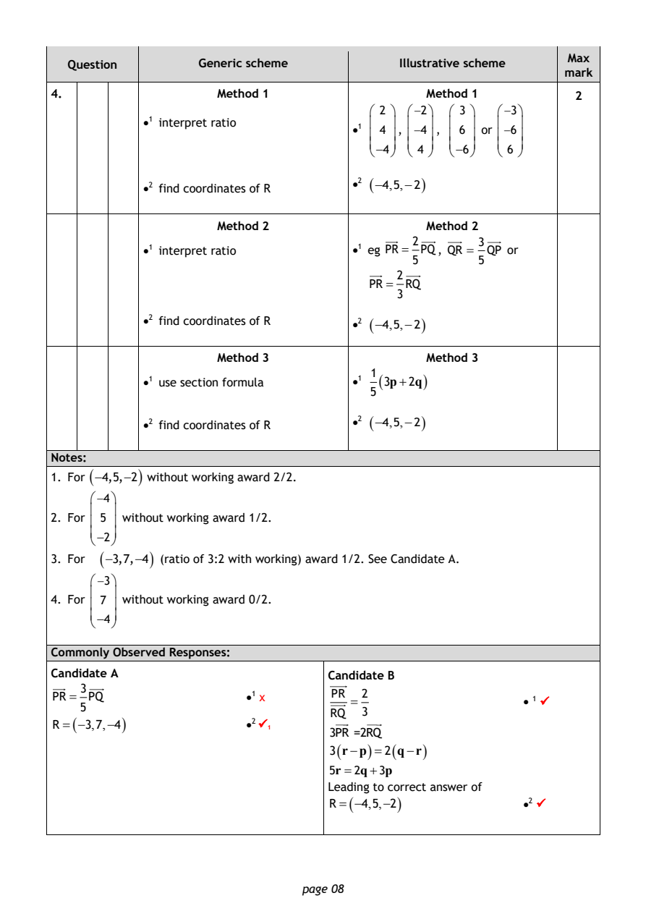
Selectable page text
Max
Question Generic scheme Illustrative scheme
mark
4. Method 1 Method 1 2
2 −2 3 −3
•1 interpret ratio
•1 4 , −4 , 6 or −6
−4
4
−6
6
•2 find coordinates of R
•2 (−4,5,−2)
Method 2 Method 2
2 3
•1 interpret ratio •1 eg PR = PQ, QR = QP or
5 5
2
PR = RQ
3
•2 find coordinates of R •2 (−4,5,−2)
Method 3 Method 3
1
•1 use section formula •1 (3p+2q)
5
•2 find coordinates of R •2 (−4,5,−2)
Notes:
1. For
(−4,5,−2 )
without working award 2/2.
−4
2. For 5 without working award 1/2.
−2
3. For
(−3,7,−4 )
(ratio of 3:2 with working) award 1/2. See Candidate A.
−3
4. For 7 without working award 0/2.
−4
Commonly Observed Responses:
Candidate A Candidate B
3
PR = PQ •1 x PR 2
= • 1 ✓
5
RQ 3
R =(−3,7,−4) •2 ✓
1 3PR =2RQ
3(r−p)=2(q−r)
5r =2q+3p
Leading to correct answer of
R=(−4,5,−2) •2 ✓
page 08PDF page 9
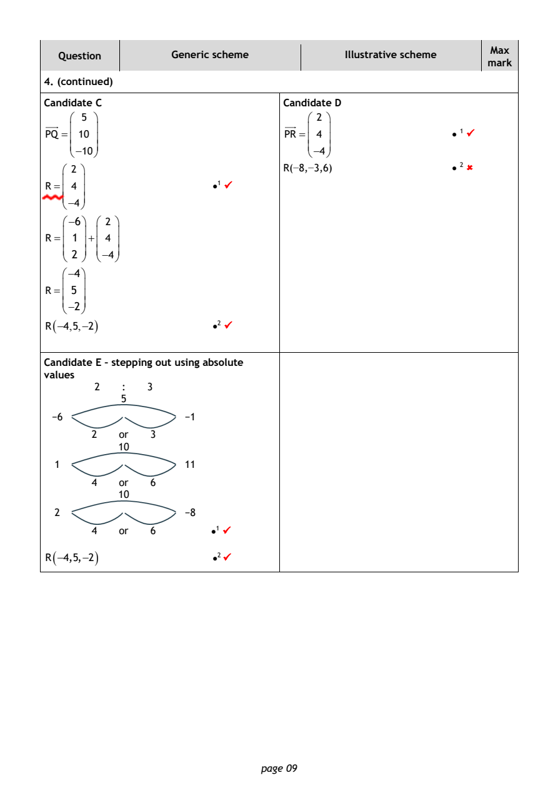
Selectable page text
Max
Question Generic scheme Illustrative scheme
mark
4. (continued)
Candidate C Candidate D
5 2
PQ = 10 PR = 4 • 1 ✓
−10
−4
2 R(−8,−3,6) • 2
R = 4 •1 ✓
−4
−6 2
R = 1 + 4
2
−4
−4
R = 5
−2
R(−4,5,−2) •2 ✓
Candidate E – stepping out using absolute
values
2 : 3
5
−6 −1
2 or 3
10
1 11
4 or 6
10
2 −8
4 or 6 •1 ✓
R (−4,5,−2 ) •2 ✓
page 09PDF page 10
Paper 1, Question 5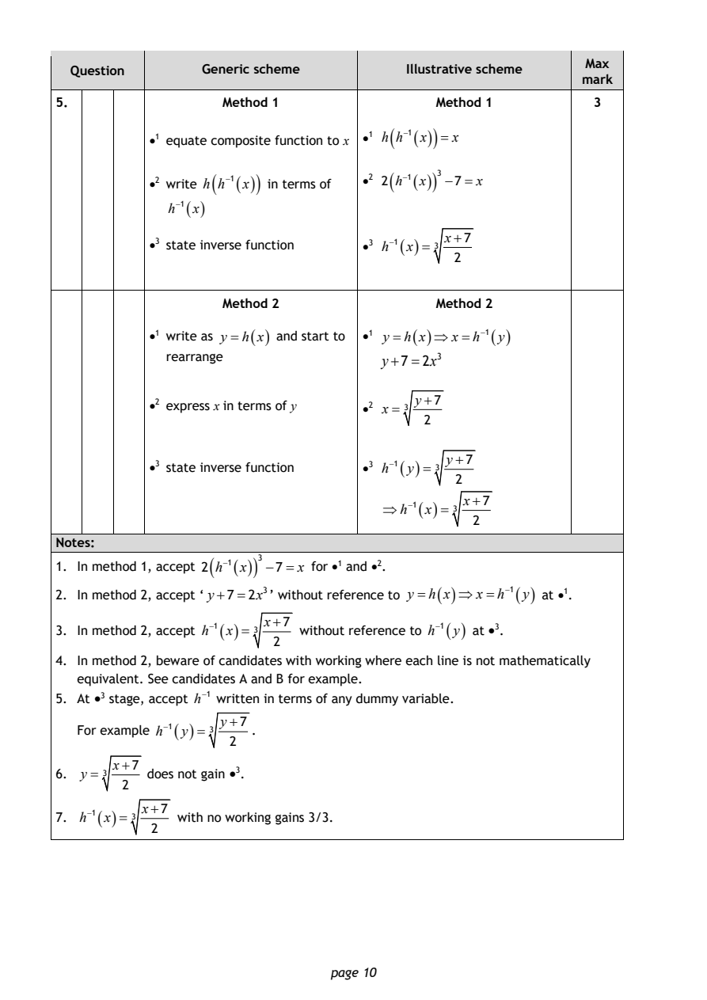
Selectable page text
Max
Question Generic scheme Illustrative scheme
mark
5. Method 1 Method 1 3
•1 equate composite function to x •¹ h
( h⁻¹(x))
= x
•2 write h ( h⁻¹(x)) in terms of •2 2 ( h⁻¹(x)) ³ −7= x
h⁻¹(x)
x+7
•3 state inverse function •3 h⁻¹(x)= ³
2
Method 2 Method 2
•1 write as y =h(x) and start to •1 y =h(x)⇒ x=h⁻¹(y)
rearrange y+7=2x³
y+7
•2 express x in terms of y •2 x= ³
2
y+7
•3 state inverse function •3 h⁻¹(y)= ³
2
x+7
⇒h⁻¹(x)= ³
2
Notes:
1. In method 1, accept 2
( h⁻¹(x))
³ −7= x for •¹ and •².
2. In method 2, accept ‘y+7=2x³’ without reference to y =h(x)⇒ x=h⁻¹(y) at •¹.
x+7
3. In method 2, accept h⁻¹(x)= ³ without reference to h⁻¹(y) at •³.
2
4. In method 2, beware of candidates with working where each line is not mathematically
equivalent. See candidates A and B for example.
5. At •³ stage, accept h⁻¹ written in terms of any dummy variable.
y+7
For example h⁻¹(y)= ³ .
2
x+7
6. y = ³ does not gain •³.
2
x+7
7. h⁻¹(x)= ³ with no working gains 3/3.
2
page 10PDF page 11
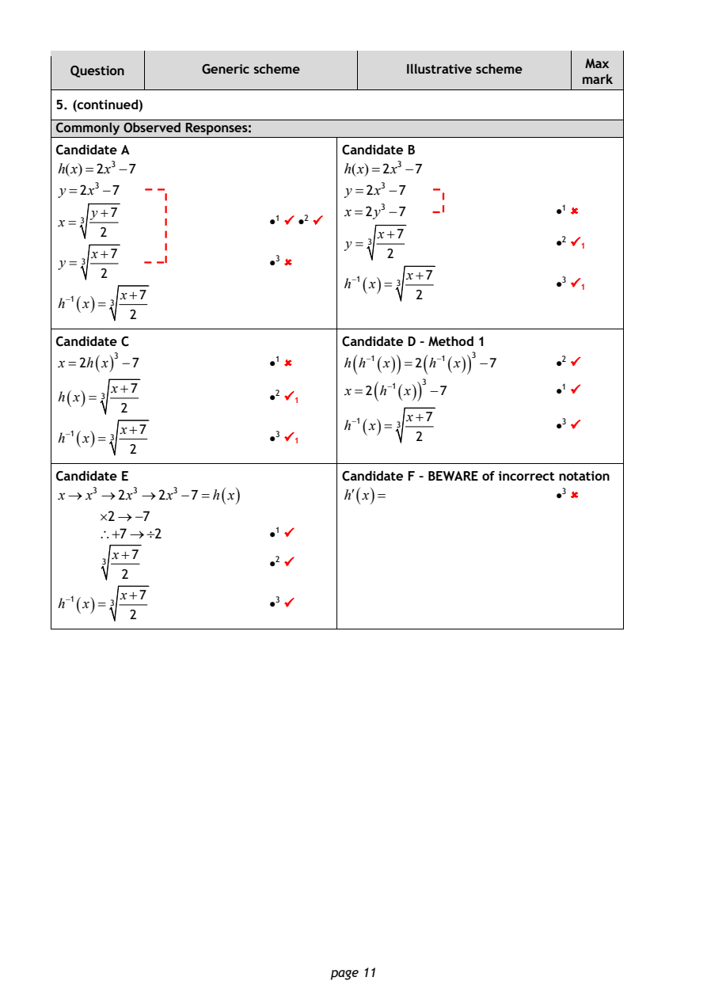
Selectable page text
Max
Question Generic scheme Illustrative scheme
mark
5. (continued)
Commonly Observed Responses:
Candidate A Candidate B
h(x)=2x³ −7 h(x)=2x³ −7
y=2x³ −7 y=2x³ −7
y+7 x=2y³ −7 •1
x= ³ •1 ✓ •2 ✓
2 x+7
y = ³ •2 ✓
1
x+7 2
y = ³ •3
2 x+7
h⁻¹(x)= ³ •3 ✓
1
x+7 2
h⁻¹(x)= ³
2
Candidate C Candidate D – Method 1
x=2h(x)³ −7 •1 h ( h⁻¹(x)) =2 ( h⁻¹(x)) ³ −7 •2 ✓
h(x)= ³
x+7
•2 ✓
x=2 ( h⁻¹(x)) ³ −7 •1 ✓
1
2
x+7
x+7 h⁻¹(x)= ³ •3 ✓
h⁻¹(x)= ³ •3 ✓ 2
1
2
Candidate E Candidate F – BEWARE of incorrect notation
x→x³ →2x³ →2x³ −7=h(x) h′(x)= •3
×2→−7
∴+7→÷2 •1 ✓
x+7
3 •2 ✓
2
x+7
h⁻¹(x)= ³ •3 ✓
2
page 11PDF page 12
Paper 1, Question 6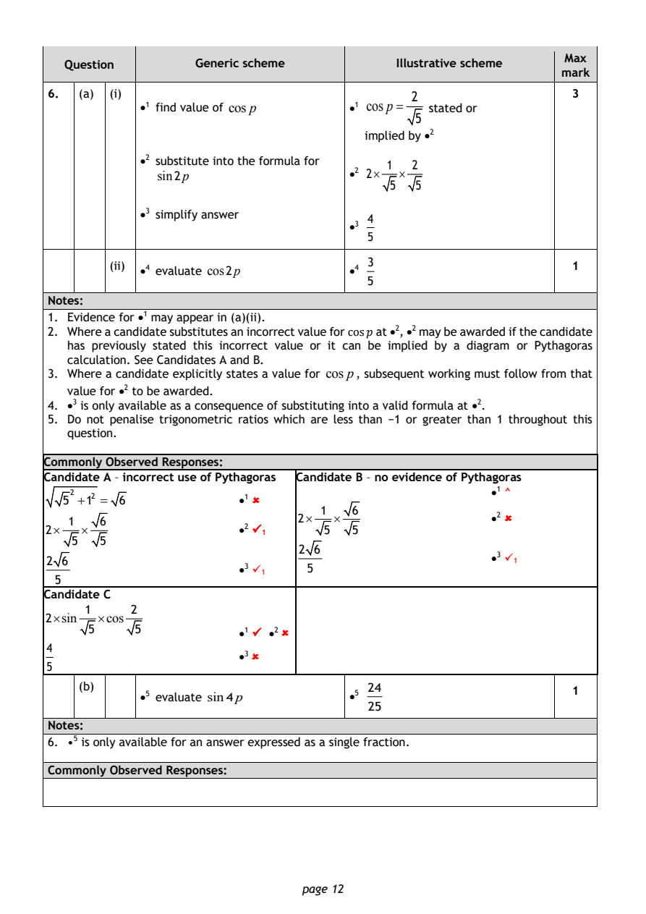
Selectable page text
Max
Question Generic scheme Illustrative scheme
mark
6. (a) (i) 2 3
•1 find value of cos p •1 cos p= stated or
5
implied by •²
•2 substitute into the formula for
1 2
sin2p •2 2× ×
5 5
•3 simplify answer
4
•3
5
(ii)
•4 evaluate cos2p •4
3 1
5
Notes:
1. Evidence for •¹ may appear in (a)(ii).
2. Where a candidate substitutes an incorrect value for cos𝑝 at •², •2 may be awarded if the candidate
has previously stated this incorrect value or it can be implied by a diagram or Pythagoras
calculation. See Candidates A and B.
3. Where a candidate explicitly states a value for cos p, subsequent working must follow from that
value for •² to be awarded.
4. •³ is only available as a consequence of substituting into a valid formula at •².
5. Do not penalise trigonometric ratios which are less than −1 or greater than 1 throughout this
question.
Commonly Observed Responses:
Candidate A – incorrect use of Pythagoras Candidate B – no evidence of Pythagoras
•1 ^
5² +1² = 6 •1
1 6
1 6 2× × •2
2× × •2 ✓ 5 5
1
5 5
2 6
2 6 •3 ✓ 1
•3 ✓ 5
1
5
Candidate C
1 2
2×sin ×cos
5 5 •1 ✓ •2
4
•3
5
(b) 24
1
•5 evaluate sin4p •5
25
Notes:
6. •5 is only available for an answer expressed as a single fraction.
Commonly Observed Responses:
page 12PDF page 13
Paper 1, Question 7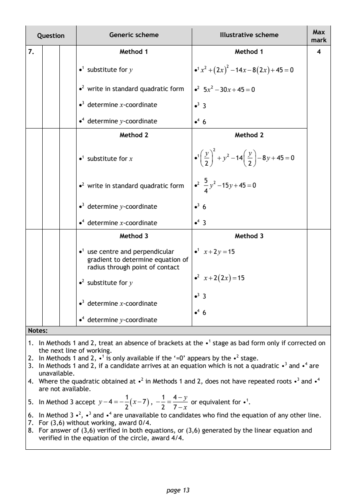
Selectable page text
Max
Question Generic scheme Illustrative scheme
mark
7. Method 1 Method 1 4
•1 substitute for y •1x² +(2x)² −14x−8(2x)+45=0
•2 write in standard quadratic form •2 5x² −30x+45=0
•3 determine x-coordinate •3 3
•4 determine y-coordinate •4 6
Method 2 Method 2
y² y
•1 substitute for x •1 + y² −14 −8y+45=0
2 2
5
•2 write in standard quadratic form •2 y² −15y+45=0
4
•3 determine y-coordinate •3 6
•4 determine x-coordinate •4 3
Method 3 Method 3
•1 use centre and perpendicular •1 x+2y =15
gradient to determine equation of
radius through point of contact
•2 x+2(2x)=15
•2 substitute for y
•3 3
•3 determine x-coordinate
•4 6
•4 determine y-coordinate
Notes:
1. In Methods 1 and 2, treat an absence of brackets at the •¹ stage as bad form only if corrected on
the next line of worki₁ng.
2. In Methods 1 and 2, • is only available if the ‘=0’ appears by the •² stage.
3. In Methods 1 and 2, if a candidate arrives at an equation which is not a quadratic •³ and •⁴ are
unavailable.
4. Where the quadratic obtained at •² in Methods 1 and 2, does not have repeated roots •³ and •⁴
are not available.
1 1 4− y
5. In Method 3 accept y−4 =− (x−7) , − = or equivalent for •¹.
2 2 7−x
6. In Method 3 •², •3 and •⁴ are unavailable to candidates who find the equation of any other line.
7. For (3,6) without working, award 0/4.
8. For answer of (3,6) verified in both equations, or (3,6) generated by the linear equation and
verified in the equation of the circle, award 4/4.
page 13PDF page 14
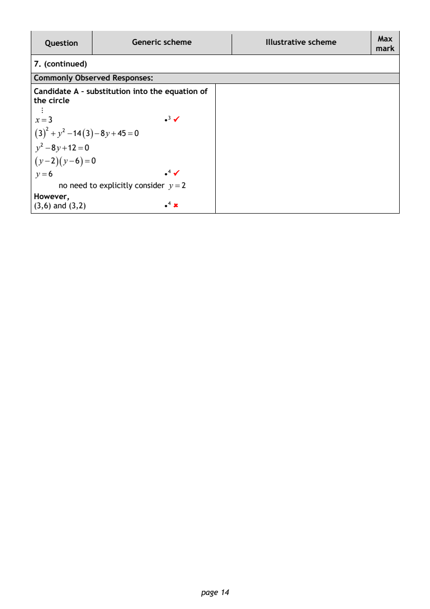
Selectable page text
Max
Question Generic scheme Illustrative scheme
mark
7. (continued)
Commonly Observed Responses:
Candidate A – substitution into the equation of
the circle
⋮
x=3 •3 ✓
(3)² + y² −14(3)−8y+45=0
y² −8y+12=0
(y−2)(y−6)=0
y=6 •4 ✓
no need to explicitly consider y=2
However,
(3,6) and (3,2) •4
page 14PDF page 15
Paper 1, Question 8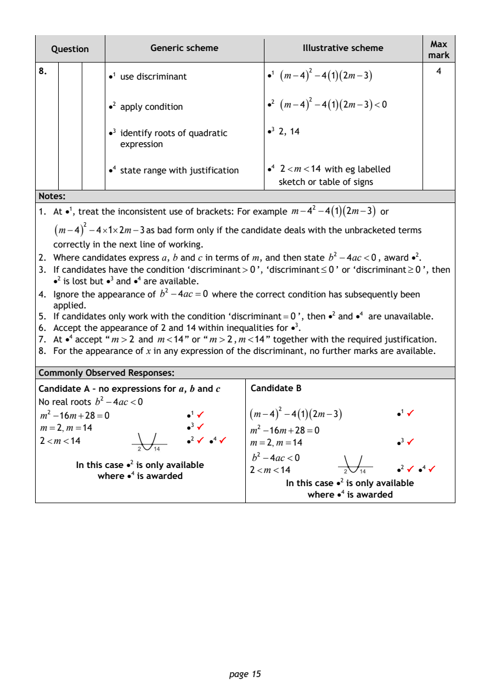
Selectable page text
Max
Question Generic scheme Illustrative scheme
mark
8. •1 use discriminant •1 (m−4)² −4(1)(2m−3) 4
•2 apply condition •2 (m−4)² −4(1)(2m−3)<0
•3 identify roots of quadratic •3 2, 14
expression
•4 state range with justification •4 2<m<14 with eg labelled
sketch or table of signs
Notes:
1. At •¹, treat the inconsistent use of brackets: For example m−4² −4(1)(2m−3) or
(m−4)² −4×1×2m−3as bad form only if the candidate deals with the unbracketed terms
correctly in the next line of working.
2. Where candidates express a, b and c in terms of m, and then state b² −4ac<0, award •².
3. If candidates have the condition ‘discriminant>0’, ‘discriminant≤0’ or ‘discriminant≥0’, then
•2 is lost but •³ and •⁴ are available.
4. Ignore the appearance of b² −4ac=0 where the correct condition has subsequently been
applied.
5. If candidates only work with the condition ‘discriminant=0’, then •² and •⁴ are unavailable.
6. Accept the appearance of 2 and 14 within inequalities for •³.
7. At •⁴ accept “m>2 and m<14” or “m>2,m<14” together with the required justification.
8. For the appearance of x in any expression of the discriminant, no further marks are available.
Commonly Observed Responses:
Candidate A – no expressions for a, b and c Candidate B
No real roots b² −4ac<0
m² −16m+28=0 •1 (m−4)² −4(1)(2m−3) •1
m=2,m=14 •3 m² −16m+28=0
2<m<14 •2 •4 m=2,m=14 •3
b² −4ac<0
In this case •² is only available
2<m<14 •2 •4
where •⁴ is awarded
In this case •² is only available
where •⁴ is awarded
page 15PDF page 16
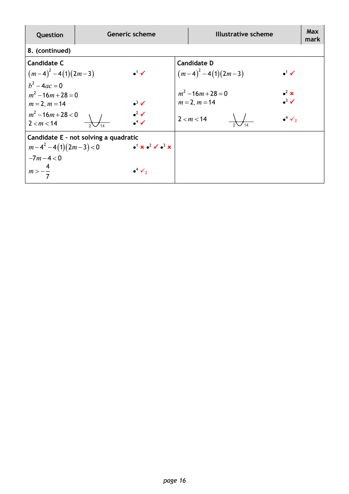
Selectable page text
Max
Question Generic scheme Illustrative scheme
mark
8. (continued)
Candidate C Candidate D
(m−4)² −4(1)(2m−3) •1 (m−4)² −4(1)(2m−3) •1
b² −4ac=0
m² −16m+28=0 m² −16m+28=0 •2
m=2,m=14 •3 m=2,m=14 •3
m² −16m+28<0 •2
2<m<14 •4 ✓
2<m<14 •4 2
Candidate E – not solving a quadratic
m−4² −4(1)(2m−3)<0 •1 •2 •3
−7m−4<0
4
m>− •4 ✓
2
7
page 16PDF page 17
Paper 1, Question 9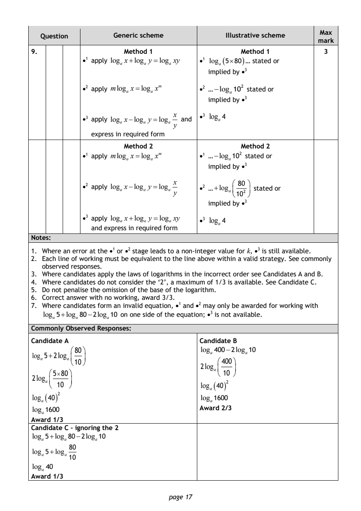
Selectable page text
Max
Question Generic scheme Illustrative scheme
mark
9. Method 1 Method 1 3
•1 apply logₐ x+logₐ y=logₐ xy •1 logₐ(5×80)… stated or
implied by •³
•2 apply mlogₐ x=logₐ x^{m} •2 …−logₐ10² stated or
implied by •³
•3 apply logₐ x−logₐ y=logₐ
x
and
•3 logₐ4
y
express in required form
Method 2 Method 2
•1 apply mlogₐ x=logₐ x^{m} •1 …−logₐ10² stated or
implied by •³
x 80
•2 apply logₐ x−logₐ y=logₐ •2 …+logₐ stated or
y 10²
implied by •³
•3 apply logₐ x+logₐ y=logₐ xy •3 logₐ4
and express in required form
Notes:
1. Where an error at the •¹ or •² stage leads to a non-integer value for k, •³ is still available.
2. Each line of working must be equivalent to the line above within a valid strategy. See commonly
observed responses.
3. Where candidates apply the laws of logarithms in the incorrect order see Candidates A and B.
4. Where candidates do not consider the ‘2’, a maximum of 1/3 is available. See Candidate C.
5. Do not penalise the omission of the base of the logarithm.
6. Correct answer with no working, award 3/3.
7. Where candidates form an invalid equation, •¹ and •² may only be awarded for working with
logₐ5+logₐ80−2logₐ10 on one side of the equation; •³ is not available.
Commonly Observed Responses:
Candidate A Candidate B
80 logₐ400−2logₐ10
logₐ5+2logₐ
10 400
2logₐ
5×80 10
2logₐ
10 logₐ( 40 ) ²
logₐ(
40
)
² logₐ1600
logₐ1600 Award 2/3
Award 1/3
Candidate C – ignoring the 2
logₐ5+logₐ80−2logₐ10
80
logₐ5+logₐ
10
logₐ40
Award 1/3
page 17PDF page 18
Paper 1, Question 10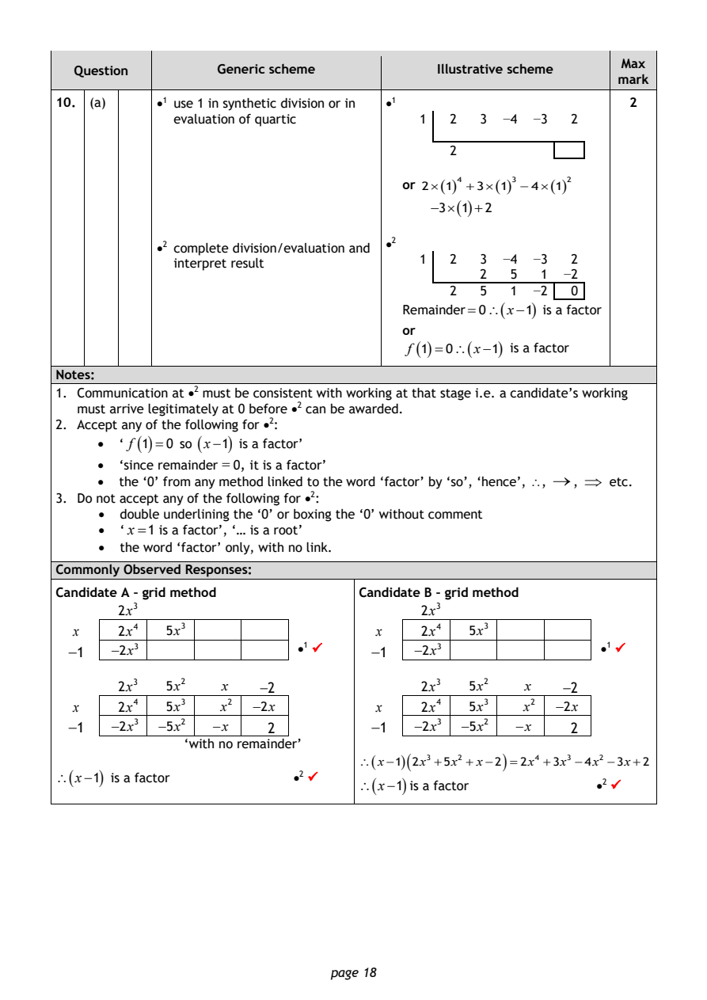
Selectable page text
Max
Question Generic scheme Illustrative scheme
mark
10. (a) •1 use 1 in synthetic division or in •1 2
evaluation of quartic 1 2 3 −4 −3 2
2
or 2×(1)⁴ +3×(1)³ −4×(1)²
−3×(1)+2
•2 complete division/evaluation and
•2
1 2 3 −4 −3 2
interpret result
2 5 1 −2
2 5 1 −2 0
Remainder=0∴(x−1) is a factor
or
f (1)=0∴(x−1) is a factor
Notes:
1. Communication at •² must be consistent with working at that stage i.e. a candidate’s working
must arrive legitimately at 0 before •² can be awarded.
2. Accept any of the following for •²:
• ‘ f (1)=0 so (x−1) is a factor’
• ‘since remainder = 0, it is a factor’
• the ‘0’ from any method linked to the word ‘factor’ by ‘so’, ‘hence’, ∴, →, ⇒ etc.
3. Do not accept any of the following for •²:
• double underlining the ‘0’ or boxing the ‘0’ without comment
• ‘x=1 is a factor’, ‘… is a root’
• the word ‘factor’ only, with no link.
Commonly Observed Responses:
Candidate A – grid method Candidate B – grid method
2x³ 2x³
x 2x⁴ 5x³ x 2x⁴ 5x³
−1 −2x³ •1 ✓ −1 −2x³ •1 ✓
2x³ 5x² x −2 2x³ 5x² x −2
x 2x⁴ 5x³ x² −2x x 2x⁴ 5x³ x² −2x
−1 −2x³ −5x² −x 2 −1 −2x³ −5x² −x 2
‘with no remainder’
∴(x−1)(
2x³ +5x² +x−2
)
=2x⁴ +3x³ −4x² −3x+2
∴(x−1) is a factor •2 ✓
∴(x−1) is a factor •2 ✓
page 18PDF page 19
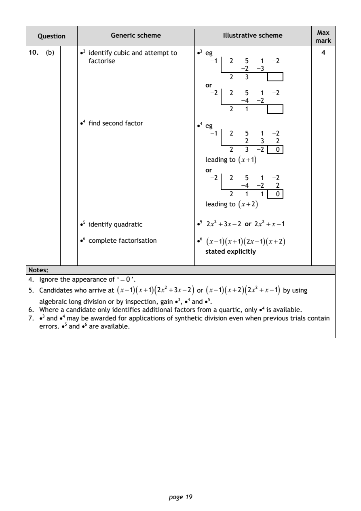
Selectable page text
Max
Question Generic scheme Illustrative scheme
mark
10. (b) •3 identify cubic and attempt to •3 eg 4
factorise −1 2 5 1 −2
−2 −3
2 3
or
−2 2 5 1 −2
−4 −2
2 1
•4 find second factor •4 eg
−1 2 5 1 −2
−2 −3 2
2 3 −2 0
leading to
(x+1)
or
−2 2 5 1 −2
−4 −2 2
2 1 −1 0
leading to
(x+2)
•5 identify quadratic •5 2x² +3x−2 or 2x² +x−1
•6 complete factorisation •6 (x−1)(x+1)(2x−1)(x+2)
stated explicitly
Notes:
4. Ignore the appearance of ‘=0’.
5. Candidates who arrive at
(x−1)(x+1)(
2x² +3x−2
)
or
(x−1)(x+2)(
2x² +x−1
)
by using
algebraic long division or by inspection, gain •³, •4 and •⁵.
6. Where a candidate only identifies additional factors from a quartic, only •⁴ is available.
7. •³ and •⁴ may be awarded for applications of synthetic division even when previous trials contain
errors. •⁵ and •⁶ are available.
page 19PDF page 20
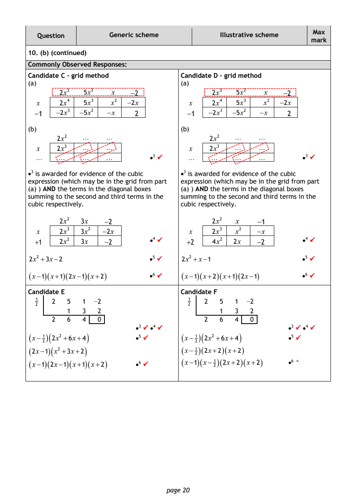
Selectable page text
Max
Question Generic scheme Illustrative scheme
mark
10. (b) (continued)
Commonly Observed Responses:
Candidate C – grid method Candidate D – grid method
(a) (a)
2x³ 5x² x −2 2x³ 5x² x −2
x 2x⁴ 5x³ x² −2x x 2x⁴ 5x³ x² −2x
−1 −2x³ −5x² −x 2 −1 −2x³ −5x² −x 2
(b) (b)
2x² 2x²
x 2x³ x 2x³
•3 ✓ •3 ✓
•3 is awarded for evidence of the cubic •3 is awarded for evidence of the cubic
expression (which may be in the grid from part expression (which may be in the grid from part
(a) ) AND the terms in the diagonal boxes (a) ) AND the terms in the diagonal boxes
summing to the second and third terms in the summing to the second and third terms in the
cubic respectively. cubic respectively.
2x² 3x −2 2x² x −1
x 2x³ 3x² −2x x 2x³ x² −x
+1 2x² 3x −2 •4 ✓ +2 4x² 2x −2 •4 ✓
2x² +3x−2 •5 ✓ 2x² +x−1 •5 ✓
(x−1)(x+1)(2x−1)(x+2) •6 ✓ (x−1)(x+2)(x+1)(2x−1) •6 ✓
Candidate E Candidate F
1 2 5 1 −2 1 2 5 1 −2
2 2
1 3 2 1 3 2
2 6 4 0 2 6 4 0
•3 ✓ •4 ✓ •3 ✓ •4 ✓
(x−₂¹)(
2x² +6x+4
)
•5 ✓
(x−₂¹)(
2x² +6x+4
)
•5 ✓
(2x−1)(
x² +3x+2
) (x−₂¹)(2x+2)(x+2)
(x−1)(2x−1)(x+1)(x+2) •6 ✓ (x−1)(x−₂¹)(2x+2)(x+2) •6 ^
page 20PDF page 21
Paper 1, Question 11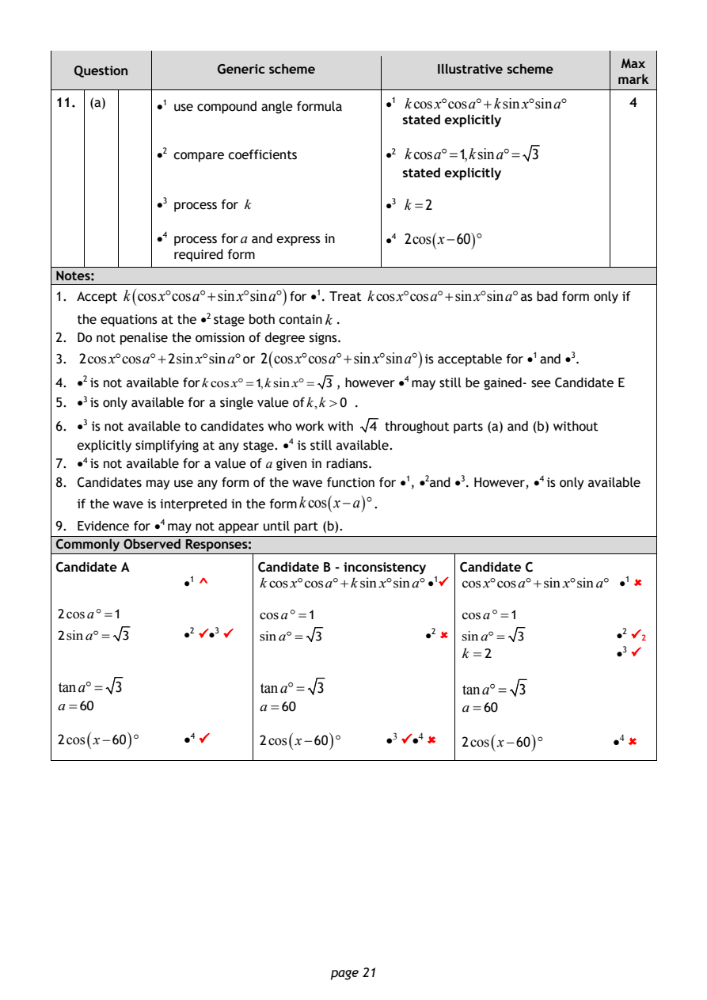
Selectable page text
Max
Question Generic scheme Illustrative scheme
mark
11. (a) •1 use compound angle formula •1 kcosx°cosa°+ksinx°sina° 4
stated explicitly
•2 compare coefficients •2 kcosa°=1,ksina°= 3
stated explicitly
•3 process for k •3 k =2
•4 process foraand express in •4 2cos(x−60)°
required form
Notes:
1. Accept k(cosx°cosa°+sinx°sina°) for •¹. Treat kcosx°cosa°+sinx°sina°as bad form only if
the equations at the •² stage both containk .
2. Do not penalise the omission of degree signs.
3. 2cosx°cosa°+2sinx°sina°or 2(cosx°cosa°+sinx°sina°) is acceptable for •¹ and •³.
4. •² is not available forkcosx°=1,ksinx°= 3 , however •⁴ may still be gained- see Candidate E
5. •³ is only available for a single value ofk,k >0 .
6. •³ is not available to candidates who work with 4 throughout parts (a) and (b) without
explicitly simplifying at any stage. •⁴ is still available.
7. •⁴ is not available for a value of a given in radians.
8. Candidates may use any form of the wave function for •¹, •2and •³. However, •⁴ is only available
if the wave is interpreted in the
formkcos(x−a)°.
9. Evidence for •⁴ may not appear until part (b).
Commonly Observed Responses:
Candidate A Candidate B - inconsistency Candidate C
•1 ^ kcosx°cosa°+ksinx°sina°•¹✓ cosx°cosa°+sinx°sina° •¹
2cosa°=1 cosa°=1 cosa°=1
2sina°= 3 •2 ✓•3 ✓ sina°= 3 •2 sina°= 3 •2 ✓
2
k =2 •3 ✓
tana°= 3 tana°= 3 tana°= 3
a=60 a=60 a=60
2cos(x−60)° •4 ✓ 2cos(x−60)° •3 ✓•4 2cos(x−60)° •4
page 21PDF page 22
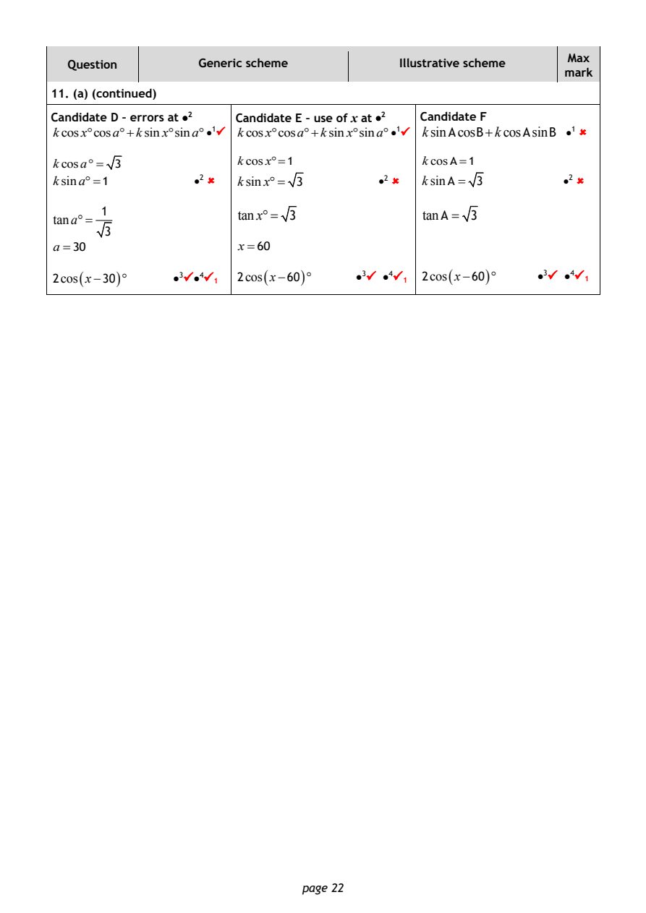
Selectable page text
Max
Question Generic scheme Illustrative scheme
mark
11. (a) (continued)
Candidate D – errors at •² Candidate E – use of x at •² Candidate F
kcosx°cosa°+ksinx°sina°•¹✓ kcosx°cosa°+ksinx°sina°•¹✓ ksinAcosB+kcosAsinB •¹
kcosa°= 3 kcosx°=1 kcosA=1
ksina°=1 •2 ksinx°= 3 •2 ksinA = 3 •2
1
tana°=
tanx°= 3 tanA = 3
3
a=30 x=60
2cos(x−30)° •3✓•4✓
1
2cos(x−60)° •3✓ •4✓
1
2cos(x−60)° •3✓ •4✓
1
page 22PDF page 23
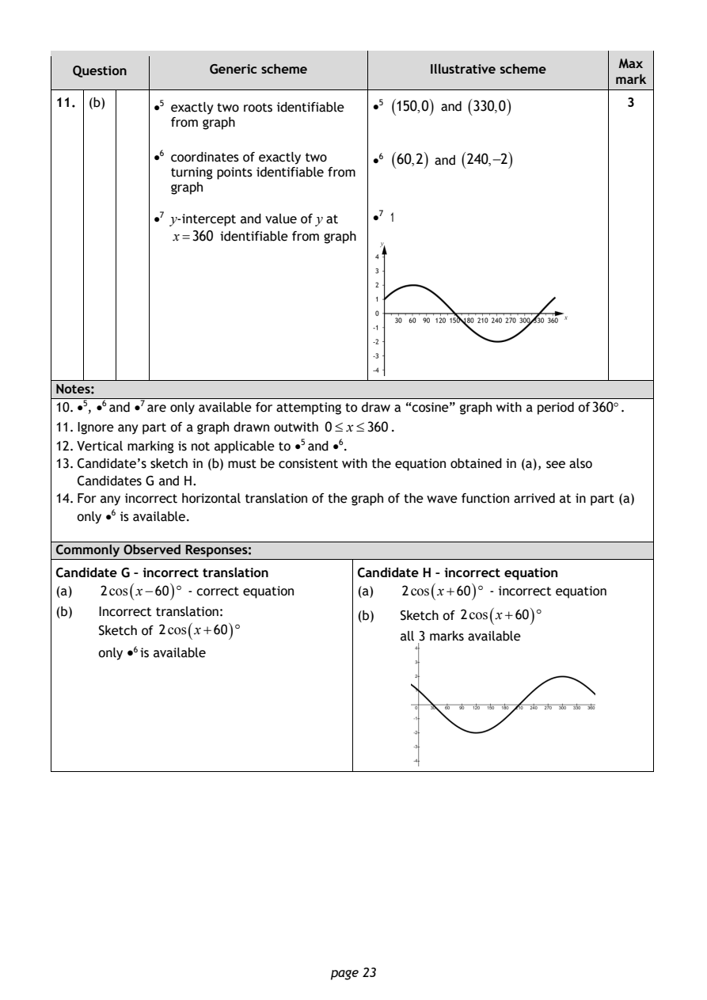
Selectable page text
Max
Question Generic scheme Illustrative scheme
mark
11. (b) •5 exactly two roots identifiable •5 (150,0) and (330,0) 3
from graph
•6 coordinates of exactly two •6 (60,2) and (240,−2)
turning points identifiable from
graph
•7 y-intercept and value of y at •7 1
x=360 identifiable from graph
Notes:
10. •⁵, •6 and •⁷ are only available for attempting to draw a “cosine” graph with a period of360°.
11. Ignore any part of a graph drawn outwith 0≤ x≤360.
12. Vertical marking is not applicable to •⁵ and •⁶.
13. Candidate’s sketch in (b) must be consistent with the equation obtained in (a), see also
Candidates G and H.
14. For any incorrect horizontal translation of the graph of the wave function arrived at in part (a)
only •⁶ is available.
Commonly Observed Responses:
Candidate G – incorrect translation Candidate H – incorrect equation
(a)
2cos(x−60)°
- correct equation (a)
2cos(x+60)°
- incorrect equation
(b) Incorrect translation: (b) Sketch of 2cos(x+60)°
Sketch of
2cos(x+60)°
all 3 marks available
only •⁶ is available
page 23PDF page 24
Paper 1, Question 12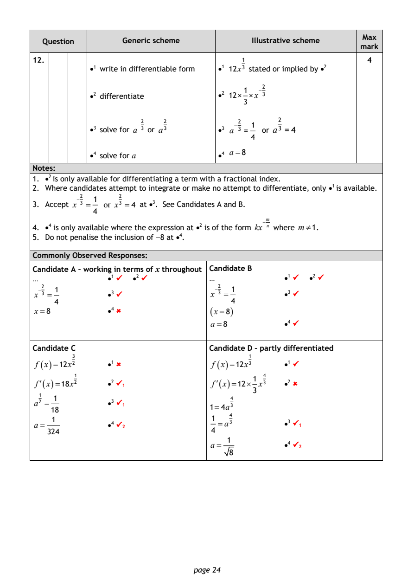
Selectable page text
Max
Question Generic scheme Illustrative scheme
mark
12. 1 4
•1 write in differentiable form •1 12x³ stated or implied by •²
2
1
•2 differentiate •2 12× ×x⁻³
3
2 2
1
•3 solve for a⁻³² or a³² •3 a⁻³ = or a³ =4
4
a=8
•4 solve for a •4
Notes:
1. •² is only available for differentiating a term with a fractional index.
2. Where candidates attempt to integrate or make no attempt to differentiate, only •¹ is available.
1
3. Accept x⁻²³ = or x²³ =4 at •³. See Candidates A and B.
4
4. •⁴ is only available where the expression at •² is of the form kx⁻^{m}ⁿ where m≠1.
5. Do not penalise the inclusion of −8 at •⁴.
Commonly Observed Responses:
Candidate A – working in terms of x throughout Candidate B
... •1 ✓ •2 ✓ ... •1 ✓ •2 ✓
1 1
x⁻²³ = •3 ✓ x⁻²³ = •3 ✓
4 4
x=8 •4 (x=8)
a=8 •4 ✓
Candidate C Candidate D – partly differentiated
f (x)=12x³² •1 f (x)=12x³¹ •1 ✓
1
f′(x)=18x²¹ •2 ✓ f′(x)=12× x⁴³ •2
1
3
1
a²¹ = •3 ✓
1 1=4a⁴³
18
1 1
a= 324 •4 ✓ 2 4 =a⁴³ •3 ✓ 1
1
a= •4 ✓
2
8
page 24PDF page 25
Paper 1, Question 13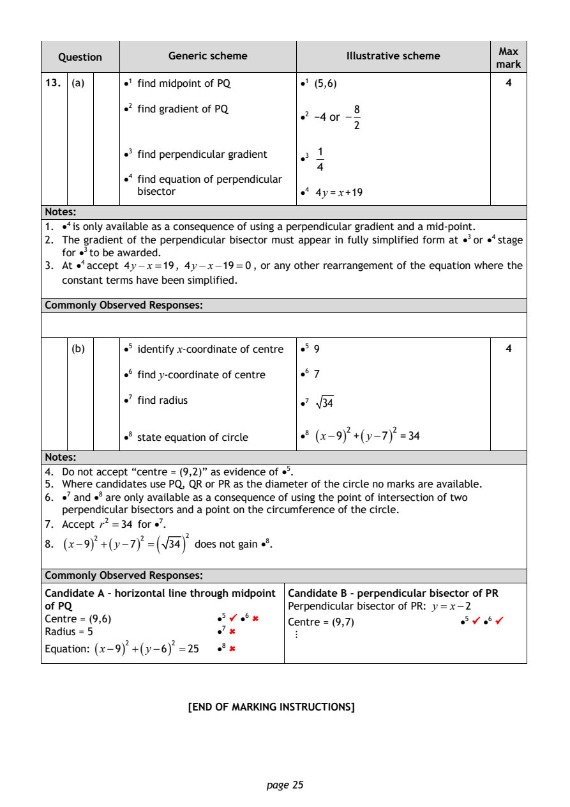
Selectable page text
Max
Question Generic scheme Illustrative scheme
mark
13. (a) •1 find midpoint of PQ •1 (5,6) 4
•2 find gradient of PQ 8
•2 −4 or −
2
•3 find perpendicular gradient 1
•3
4
•4 find equation of perpendicular
bisector •4 4y=x+19
Notes:
1. •⁴ is only available as a consequence of using a perpendicular gradient and a mid-point.
2. The gradient of the perpendicular bisector must appear in fully simplified form at •³ or •⁴ stage
for •³ to be awarded.
3. At •⁴ accept 4y−x=19, 4y−x−19=0, or any other rearrangement of the equation where the
constant terms have been simplified.
Commonly Observed Responses:
(b) •5 identify x-coordinate of centre •5 9 4
•6 find y-coordinate of centre •6 7
•7 find radius •7 34
•8 state equation of circle •8 (x−9)²+(y−7)² =34
Notes:
4. Do not accept “centre = (9,2)” as evidence of •⁵.
5. Where candidates use PQ, QR or PR as the diameter of the circle no marks are available.
6. •⁷ and •⁸ are only available as a consequence of using the point of intersection of two
perpendicular bisectors and a point on the circumference of the circle.
7. Accept r² =34 for •⁷.
( )
8. (x−9)² +(y−7)² = 34 ² does not gain •⁸.
Commonly Observed Responses:
Candidate A – horizontal line through midpoint Candidate B - perpendicular bisector of PR
of PQ Perpendicular bisector of PR: y = x−2
Centre = (9,6) •5 ✓ •6 Centre = (9,7) •5 ✓ •6 ✓
Radius = 5 •7 ⋮
Equation: (x−9)² +(y−6)² =25 •8
[END OF MARKING INSTRUCTIONS]
page 25